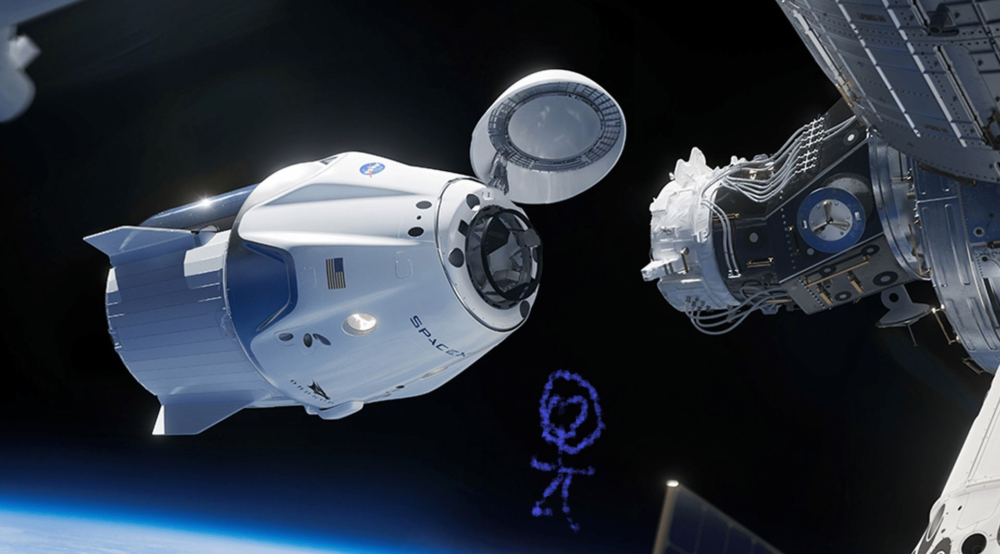

Cabecera Mejorada Tu blog de cabecera Cabecera
Mejorada Tu blog maestro
Este es el titulo del artículo de mi blog;
Ye ste es el parrafo de inicio

Voy a poner algo mas interesante aqui , solo por cambiar algo probar funsiones de GIt y de paso para ver comoe sta saliendo todo.
Los blog son una buena forma de crear y divulgar tu contenido es una manera muy buena y fundamental para qua se te hago notal y un mas si tienes alli igual un buen portafolio. tambien ceo que apra para una banda de rock es fundamental pese a que no muchas lo tiene o es en si necesario.
Suscribite y dale Like!